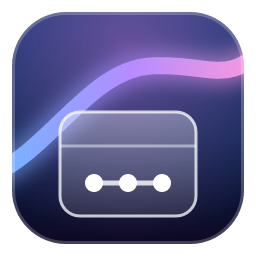
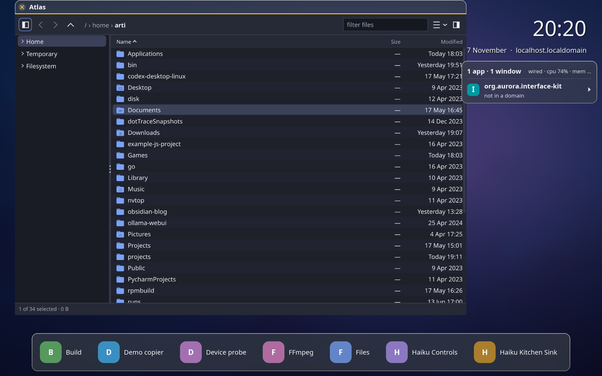
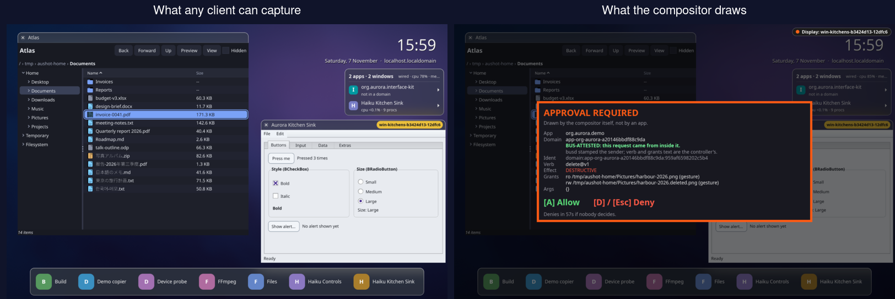
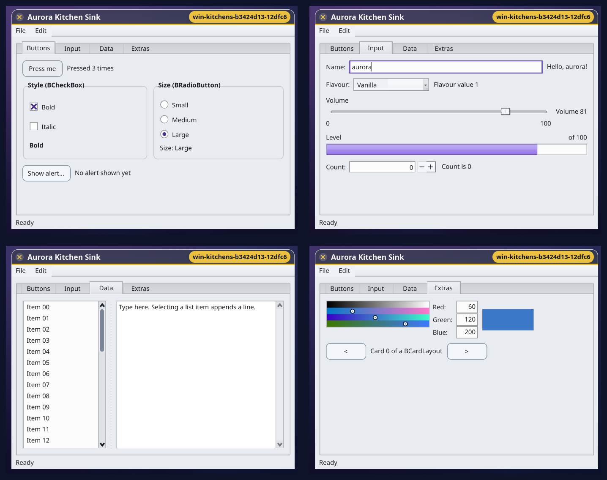
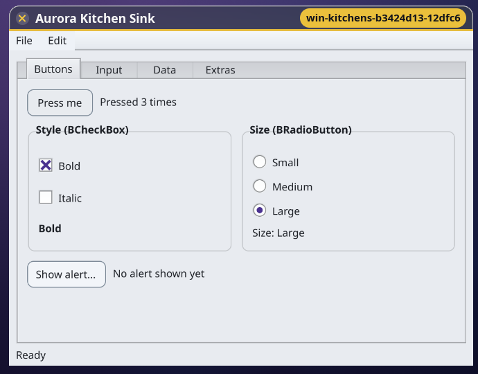
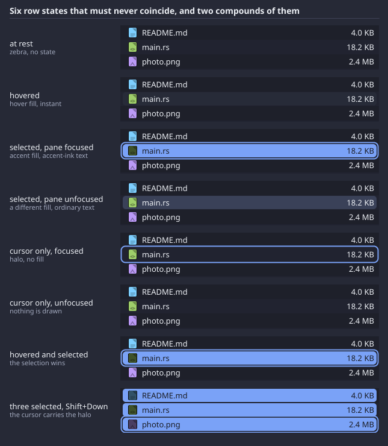
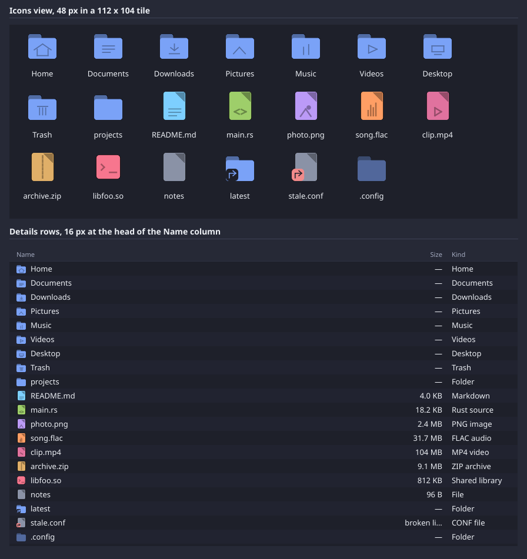
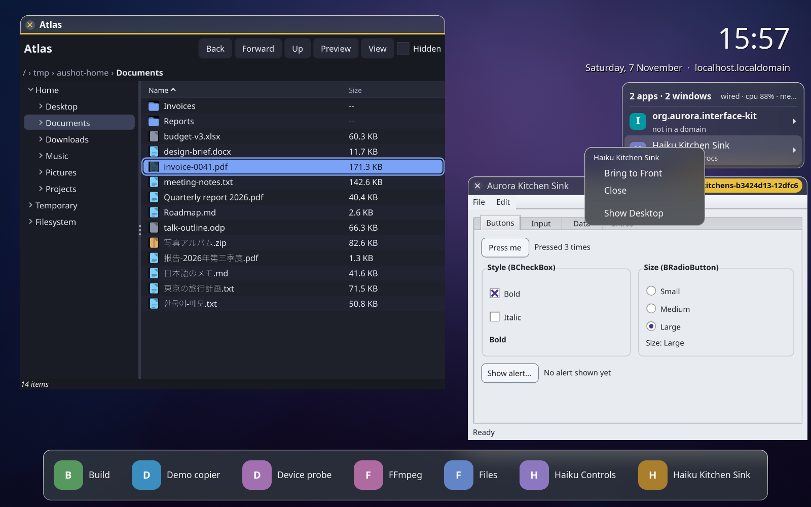
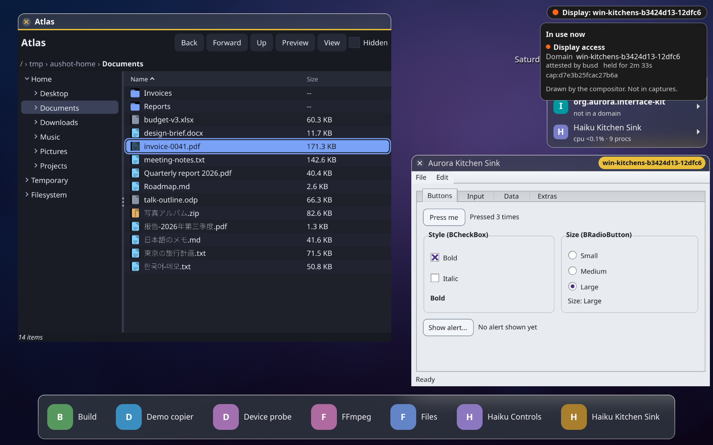

A toy desktop OS
Every action is a typed verb. Every program runs in a sandbox built for that one action. Every file remembers who made it.
It runs nested inside another compositor. It does not boot. Both are on purpose, for now — the limits are listed with everything else.

Most desktops answer “can this program open that file?” with a yes or no about you. Aurora answers it about this one action.
Not your home directory, not your SSH keys, not the rest of the folder. A bubblewrap sandbox with its own subordinate uid, granted exactly one input file and one output file, destroyed when the verb ends.
aurora open /tmp/photo.png --verb resize@v1 --app org.aurora.lumen --arg width=300$ controller provenance /tmp/photo.resize.png --verify
app org.aurora.lumen
verb resize@v1
grants ro /tmp/photo.png, rw /tmp/photo.resize.png
chain verified (event 4812, anchor ok)That is not a log line someone wrote. It is a file attribute plus an event in a hash-chained
log, and --verify recomputes the chain.
The MCP tools the gateway exposes are generated from the same manifests apps use, so an agent gets exactly the verbs a person gets, with the same grants, the same provenance, and destructive calls stopping at a human.
The powerbox draws the chooser outside the asking program. The program never sees a path it was not given, and a confirm is drawn by the compositor itself, so a client can neither read it nor forge it.
Both halves below were captured at the same moment. On the left is what a screen capture by any client returns. On the right is the frame the compositor actually drew.

delete@v1 asking to be approved. The panel names the app, the
domain, the verb, the destructive effect, and the exact paths it would read and write. It
is marked bus-attested, meaning busd stamped the sender from kernel facts rather than
taking the client's word. A client has no protocol object for any of it, and the capture path
runs before the overlay is drawn, so it cannot be read, screenshotted or forged.Not a reimplementation and not a port. Haiku's unmodified Interface Kit source, built against Aurora's own app_server, running as Wayland clients.


These sheets are rendered by the toolkit itself, so they stay true as it changes. They are the check for a rule this codebase has broken four times: two different states must never draw alike.


Every claim here has a demo that starts a real stack, asserts on decoded output, and exits non-zero when it is wrong. They are the regression suite.
make demos # all 21
demos/full-stack/run.sh| Run this | And you will see |
|---|---|
demos/full-stack | a verb invoked, a domain built and destroyed, the output decoded and its provenance verified |
demos/kitchen-sink | Haiku's unmodified Interface Kit driven through real widgets |
demos/drag-drop | files and rich text crossing in and out of Aurora, and a sandboxed app's paths withheld from the host |
demos/ptrace-ancestry | the system demonstrating its own weakness: why a sandboxed process is easier to inject into than an ordinary one |
demos/crash-survival | the compositor killed with -9 and coming back with its scale, background, dock and font |
demos/buffer-pool | a client's buffer pool refusing to show a frame the app never drew |
demos/resize-storm | a drag costing 2 window reallocations instead of 43 |


Stated here for the same reason they are stated in the code.
CAP_SYS_PTRACE inside it. There is a demo that proves it.A research prototype that demonstrates mechanisms and measures their limits. It is not a security boundary against a same-user attacker, and it does not boot.